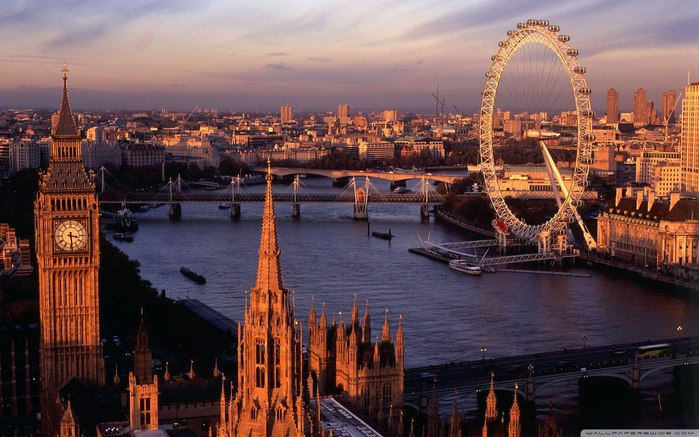
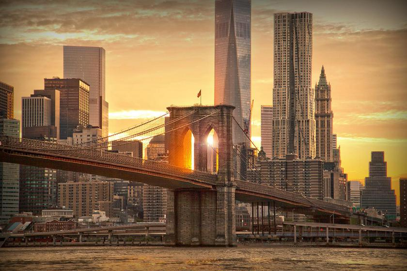

Любой город по-своему интересен - будь то столица великой державы ли маленький городок, затерянный где-нибудь в Альпах. Мы предлагаем вам путешествия по самым известным городам мира, которые являются неотъемлемой частью истории человечества.
Рим называют Вечным городом. И это не зря. Столица Италии уже минула рубеж в 2,7 тысячи лет, но осталась такой же прекрасной и уникальной. Веками создававшийся город может предложить своим жителям и гостям столько интересных мест и достопримечательностей, что осмотреть их все не получится и за неделю. В Риме заключена удивительная концентрация исторических объектов, удачно вписывающихся в бешеный ритм жизни Вечного города. В этом месте сошлись прошлое, настоящее и будущее. Гуляя по римским улочкам, вы можете себе ясно представить, как давным-давно здесь же прогуливались Цезарь, Микеланджело, Карл Великий и другие значимые для мировой истории личности. Наслаждайтесь роскошными предметами архитектуры, занимайтесь шоппингом в самых бутиках самых известных модельеров мира или же отдыхайте в тени в уютном кафе за чашечкой отлично сваренного эспрессо. Все это и многое другое предлагает всем и каждому столица Италии. И этим предложением нельзя не воспользоваться!
Афины не просто столичный город. Именно здесь родилась классическая Греция, а значит и западная цивилизация вообще. Первое доисторическое поселение возникло здесь в районе 3000 г. до н. э. За много веков с Афинами происходило всякое, в том числе и периоды упадка. Трудно представить, но в 1830-х гг., когда город стал возрождаться после оттоманского гнёта как столица независимой Греции, Афины были всего лишь небольшой провинциальной деревней. Афины включают в себя Старый город, центральные районы, пригороды, а также порт Пирей. В центре возвышаются два холма: холм Акрополя с Парфеноном и древними храмами и холм Ликабет (Ликавитос) с живописной церквушкой Св. Георгия на вершине.
Описывать Париж по большом счету бессмысленно - но вовсе не потому, что писать не о чем. Просто Париж, как ни один город в мире, не хочет укладываться в рамки и соответствовать стереотипам. Конечно, всякий слышал об утреннем кофе с круассанами, вечерних бистро с шумными столиками, запахе жареных каштанов на парижских бульварах... но для кого-то Париж — это гулкий полумрак Нотр-Дама, тихий шепот туристов в залах Лувра и почти безлюдный, застроенный старинными особняками остров Сен-Луи. Для кого-то столица Франции — прежде всего Эйфелева башня, памятник «эпохе пара и электричества», а современные архитекторы отправляются в Париж, чтобы вдохновиться авангардными линиями квартала Дефанс и башни Монпарнас. Париж одновременно элитарен и демократичен, весел и грустен, ярок и слегка размыт дождями, как на картинах Писарро — и у каждого он свой. А чтобы открыть Париж для себя, влюбиться в него и оставить в нем частичку души, нужно не так уж и много — просто в нем побывать.
Столица Великобритании и один из самых значимых городов мира привлекает к себе внимание миллионов путешественников. Это и неудивительно - во всей Европе мало найдется столиц со столь древней и богатой историей, к тому же обладающих массой уникальных черт как в архитектурном плане, так и в образе жизни людей или смешении традиций. Лондон славится обилием достопримечательностей, огромным количеством уникальных памятников истории, средоточием деловой активности и комфортными условиями жизни, особой атмосферой своих кварталов - как старых, так и современных, множеством первоклассных магазинов, клубов, ресторанов и пабов, коим только добавляют привлекательности и всевозможные легенды, и литературные произведения, в изобилии описывающие этот город на протяжении череды веков.
Наверное, ни один город земного шара не связан так сильно с многочисленными ожиданиями и надеждами, как Нью-Йорк. Знаменитая Статуя Свободы, ставшая сегодня одним из главных символов Америки, на протяжении многих лет встречала миллионы иммигрантов, искавших в Нью-Йорке лучшей жизни. Отчасти поэтому сегодня среди местных жителей насчитывается огромное число самых разных национальностей, смешение народов и культур делает «Большое яблоко» поистине уникальным и неповторимым городом. Город Нью-Йорк расположился в устье реки Гудзон, заняв собой территорию трех островов. Сегодня он разделен на 5 больших районов: Манхэттен, Бронкс, Бруклин, Куинс и Стейтен-Айленд.
Рио-де-Жанейро — один из красивейших городов Южной Америки, находится в юго-восточной части Бразилии на берегу уникального по своей природной красоте залива Гуанабара. Это второй по величине (после Сан-Паулу) город в Бразилии, столица штата Рио-де-Жанейро, а до 1960 года — столица всей Бразилии. Своей красотой Рио-де-Жанейро обязан, в первую очередь, прекрасному месторасположению, город растянулся бесконечной полосой вдоль побережья с чудесными пляжами и скалистыми холмами на территории в 1256 км². Копакабана, Ипанема, Леблон — названия этих знаковых пляжей Рио известны нам с детства и прочно ассоциируются с Рио-де-Жанейро! А две великолепные горы — Корковадо с доминирующей над городом статуей Христа-Искупителя и Пан-де-Асукар уже давно стали визитными карточками Рио! Природа удивительно щедра к этому городу — изумрудная зелень тропических лесов, синева лагун и рек, вырастающие из бухты холмы и белоснежные пляжи, все это создает идиллическую картину райского уголка на Земле! Синонимами Рио-де-Жанейро можно смело назвать пляжи, футбол, самбу и карнавал. Удивительный симбиоз народностей и культур придают городу неповторимую яркость и самобытность! Знаменитый карнавал, который проводится здесь каждый год в конце февраля — начале марта, представляет собой красочное зрелище, знаменитое на весь мир своими зажигательными танцами различных школ самбы. Нигде в мире нет более зрелищного карнавала, чем в Рио-де-Жанейро! На пять дней город превращается в одну большую площадку для праздника и безудержного веселья. Большинство туристов стараются попасть в Рио именно в это время, но следует помнить, что цены на отели и услуги в этот период резко взлетают вверх.
Крупнейший город Австралии Сидней — яркий пример удачного синтеза ультрасовременных небоскребов делового центра со старинными «средиземноморскими» зданиями, парками и пляжами оживленного курорта. Он входит в список крупнейших городов мира, является самым населенным городом Австралии и одним из лучших мест на планете для проживания. Сидней — крупнейший город самого маленького и, пожалуй, самого удивительного материка на Земле. Именно в Сиднее находится одно из чудес современной мировой архитектуры – Сиднейский оперный театр. Крыша театра, выложенная из миллионов кафельных плиток, напоминает своей формой паруса или огромные морские раковины. Выдающимся украшением города является мост Харбор-Бридж протяженностью более 500 метров, он входит в десятку самых длинных мостов в мире. Сидней можно без преувеличения назвать самым многонациональным городом Австралии. В течение 30 лет со стороны Австралийского правительства не было никаких ограничений на иммиграцию, и большинство приезжих оседали именно в Сиднее, как в самом универсальном и интересном городе.
Город Сингапур – столица одноименного государства в Юго-Восточной Азии, которое является одним из самых маленьких в мире. В его состав входит сам мегаполис и 58 мелких островов вблизи южных берегов полуострова Малакка. Долгое время Сингапур был столицей бедной страны, жители которой нуждались даже в пресной воде, еде и песке для строительства новых домов. С 1819 года город стал британской колонией. Власти сделали все возможное, чтобы превратить ее в процветающий и прибыльный уголок суши на пересечении торговых путей из Китая в другие государства. Вторая Мировая Война ослабила Британию, что дало возможность Сингапуру стать самостоятельным государством. Сингапур – безопасный и чистый город с удивительной атмосферой радушия и гостеприимства. Он предлагает своим гостям множество интересных экскурсий, достопримечательностей, массу развлечений, высокий уровень обслуживания во всех заведениях и заманчивые сезонные распродажи. Одной из характерных особенностей Сингапура является тесное переплетение китайской, индийской и арабской культуры. Исторически так сложилось, что когда город был британской колонией, сюда в поисках работы приезжали тысячи иммигрантов разных национальностей. Они старались держаться вместе, в результате чего возникали целые кварталы представителей той или иной культуры.
Дубай - самый густонаселенный город Объединенных Арабских Эмиратов и один из крупнейших туристических центров Ближнего Востока. Город лежит на юго-восточном побережье Персидского залива, в 123 км северо-восточнее столицы ОАЭ - города Абу-Даби, и всего в 4 км юго-западнее Шарджи. Вместе с Аджманом и Шарджой он образует так называемую "столичную область", хотя фактически является самостоятельным эмиратом. Дубай — невероятный! Этот крупнейший город ОАЭ не перестает меняться и удивлять. Даже те, кто побывал в эмирате всего 7-10 лет назад, уже не имеют полного права говорить «Я видел Дубай», потому как Дубай каждый день готовит новые сюрпризы своим жителям и гостям. Неизменными остаются лишь несколько вещей: стремительное движение города вверх, к сияющим звездам и новым рекордам высоты зданий, невероятная архитектура и грандиозность проектов, ошеломительный шоппинг, насыщенная ночная и развлекательная жизнь и пустыня, в которой вырос этот современный и космополитичный центр притяжения. Ничем не приметный еще полвека назад, сегодня Дубай стал одним из богатейших городов мира, ведущим туристическим, торговым, финансовым и транспортным пунктом на карте планеты. Своим гостям эмират готов предложить самые неожиданные и самые интересные варианты досуга — горнолыжный комплекс посреди вечного лета, огромный аквариум с десятками тысяч морских животных, выставки всевозможной направленности мирового значения, фестивали и незабываемые впечатления от рукотворных островов и головокружительных небоскребов.
Один из крупнейших мегаполисов планеты, Токио – это не просто официальная столица Японии, это еще и самый важный промышленный, культурный, финансовый центр страны. Расположена японская столица на равнине Канто, в юго-восточной части острова Хонсю, в живописной бухте Токийского залива, который является частью Тихого океана. Путешественников, которые попадают в Токио впервые, поражает в первую очередь необычное сочетание древних храмов и небоскребов, поднимающихся на головокружительную высоту, вполне европейских рекламных плакатов и восточного, присущего только Японии колорита. Телебашня Tokyo Tower вполне может соперничать по популярности с Эйфелевой башней в Париже, здесь находится лучшая смотровая площадка города, с которой можно рассмотреть все красоты Токио. Посещение сада Хаппоен – это возможность увидеть традиционную чайную церемонию, которую японцы превратили в настоящее искусство, район Омоте-сандо и Харадзюку считается японскими Елисейскими полями, так как здесь расположены многочисленные модные бутики. Побывав в Токио, стоит также посетить район небоскребов — Синдзюку, увидеть мосты реки Сумидагавы, побывать в буддийском храме Асакуса.
 Рио-де-Жанейро — один из красивейших городов Южной Америки, находится в юго-восточной части Бразилии на берегу уникального по своей природной красоте залива Гуанабара. Это второй по величине (после Сан-Паулу) город в Бразилии, столица штата Рио-де-Жанейро, а до 1960 года — столица всей Бразилии. Своей красотой Рио-де-Жанейро обязан, в первую очередь, прекрасному месторасположению, город растянулся бесконечной полосой вдоль побережья с чудесными пляжами и скалистыми холмами на территории в 1256 км². Копакабана, Ипанема, Леблон — названия этих знаковых пляжей Рио известны нам с детства и прочно ассоциируются с Рио-де-Жанейро! А две великолепные горы — Корковадо с доминирующей над городом статуей Христа-Искупителя и Пан-де-Асукар уже давно стали визитными карточками Рио! Природа удивительно щедра к этому городу — изумрудная зелень тропических лесов, синева лагун и рек, вырастающие из бухты холмы и белоснежные пляжи, все это создает идиллическую картину райского уголка на Земле! Синонимами Рио-де-Жанейро можно смело назвать пляжи, футбол, самбу и карнавал. Удивительный симбиоз народностей и культур придают городу неповторимую яркость и самобытность! Знаменитый карнавал, который проводится здесь каждый год в конце февраля — начале марта, представляет собой красочное зрелище, знаменитое на весь мир своими зажигательными танцами различных школ самбы. Нигде в мире нет более зрелищного карнавала, чем в Рио-де-Жанейро! На пять дней город превращается в одну большую площадку для праздника и безудержного веселья. Большинство туристов стараются попасть в Рио именно в это время, но следует помнить, что цены на отели и услуги в этот период резко взлетают вверх.
Рио-де-Жанейро — один из красивейших городов Южной Америки, находится в юго-восточной части Бразилии на берегу уникального по своей природной красоте залива Гуанабара. Это второй по величине (после Сан-Паулу) город в Бразилии, столица штата Рио-де-Жанейро, а до 1960 года — столица всей Бразилии. Своей красотой Рио-де-Жанейро обязан, в первую очередь, прекрасному месторасположению, город растянулся бесконечной полосой вдоль побережья с чудесными пляжами и скалистыми холмами на территории в 1256 км². Копакабана, Ипанема, Леблон — названия этих знаковых пляжей Рио известны нам с детства и прочно ассоциируются с Рио-де-Жанейро! А две великолепные горы — Корковадо с доминирующей над городом статуей Христа-Искупителя и Пан-де-Асукар уже давно стали визитными карточками Рио! Природа удивительно щедра к этому городу — изумрудная зелень тропических лесов, синева лагун и рек, вырастающие из бухты холмы и белоснежные пляжи, все это создает идиллическую картину райского уголка на Земле! Синонимами Рио-де-Жанейро можно смело назвать пляжи, футбол, самбу и карнавал. Удивительный симбиоз народностей и культур придают городу неповторимую яркость и самобытность! Знаменитый карнавал, который проводится здесь каждый год в конце февраля — начале марта, представляет собой красочное зрелище, знаменитое на весь мир своими зажигательными танцами различных школ самбы. Нигде в мире нет более зрелищного карнавала, чем в Рио-де-Жанейро! На пять дней город превращается в одну большую площадку для праздника и безудержного веселья. Большинство туристов стараются попасть в Рио именно в это время, но следует помнить, что цены на отели и услуги в этот период резко взлетают вверх.